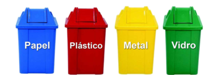

Onde reciclar e os processos da reciclagem
No Brasil existem unidades industriais com capacidade instalada para reciclar resíduos, e qualquer outro material que possa ser reciclado. Distribuídas de norte a sul do país, estas unidades são empresas transformadoras de matérias-primas, fabricantes de embalagens, retomadores e recicladores. Ecopontos e cooperativas especializadas. Para que o lixo doméstico produzido possa ser reciclado ele precisa ser, primeiramente, separado em casa. A tarefa de separar o lixo na própria residência é bem simples e pode trazer uma série de vantagens para os moradores, para a vizinhança e para o meio ambiente, principalmente. Veja a seguir como é fácil:
1º Passo: Devemos separar todo o material que pode ser reciclado do que não pode, ou seja, vidros, papéis, plásticos e metais devem ser colocados em outro saco ou container de lixo. É importante lembrar que o lixo orgânico não deve ser colocado junto do lixo reciclável apesar de também pode ser reutilizado.
2º Passo: Todo o material reciclável, anteriormente separado, deve ser lavado e estar seco para que possa ser reciclado.
3º Passo: Com o material reciclável limpo e separado, basta depositá-lo em um local estratégico e diferente do local onde se deposita o lixo comum, para que seja fácil o recolhimento. Vale lembrar que fica muito mais prático colocar o lixo reciclável em um saco plástico transparente, tanto para quem recolhe quanto para quem separa o lixo. Antes de colocar o lixo na calçada deve-se verificar o dia exato que a coleta seletiva de lixo faz o recolhimento no seu bairro.
